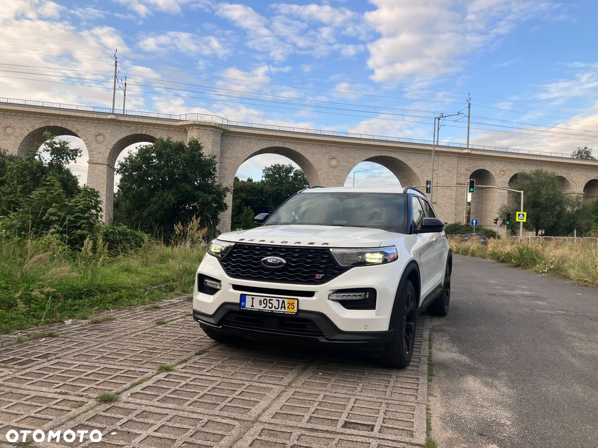

Bezwypadkowy z bogatym zestawem wyposażenia, 44800 km , 3.0L V6 EcoBoost podwójnie turbodoładowany 400 KM, benzyna
Wyposażenie
Wtrysk bezpośredni (DOHC, VVT)
10 stopniowa skrzynia biegow
4WD (dołaczany)
21-calowe czarne felgi aluminiowe.
Hamulce Performance z czerwonymi zaciskami
Automatyczne światła drogowe
Reflektory i lampy tylne LED
Czarny grill, emblematy ST i chromowane koncowki układu wydechowego.
Sportowe zestrojone zawieszenie,Normalny, Eco, Sportowy, Śliska nawierzchnia, Szlak, Głęboki śnieg/piasek i Holowanie/transport
Panorama szyberdach, podsufitka czarna alcantara
Czarne skórzane fotele, ST logo
Bezdotykowa elektrycznie otwierana klapa bagażnika
Podgrzewane i wentylowane przednie siedzenia z funkcja masażu
Podgrzewane tylne siedzenia
Trzy rzędy siedzeń (6 osobowy)
Cyfrowy zestaw wskaźników o przekątnej 12,3 cala.
Trójstrefowa automatyczna klimatyzacja
Ładowarka bezprzewodowa
Funkcje bezpieczeństwa (Ford Co-Pilot360)
Automatyczne parkowanie
Kamera cofania
Automatyczny tempomat z funkcją zatrzymywania i ruszania (ACC)
System kamer 360 stopni
System ostrzegania o pojazdach w martwym polu (BSW).
System ostrzegania o niezamierzonym opuszczeniu pasa ruchu (LDW) Asystent utrzymania pasa ruchu (LKA).
System ostrzegania przed kolizją czołową (FCW) z automatycznym hamowaniem awaryjnym dla pieszych (PAEB).
System ostrzegania o ruchu poprzecznym z tyłu pojazdu.
System zapobiegający blokowaniu kół (ABS) i elektroniczny układ stabilizacji toru jazdy (ESC)
Pakiet Technologii Premium
Kompatybilność z Apple CarPlay i Android Auto.
12 głośnikowy system audio Bang & Olufsen
Możliwość korzystania z hotspotu Wi-Fi
Bezkluczykowy zapłon i dostęp
Auto w doskonałym stanie technicznym, w orginalnym lakierze.
W aucie do zapłaty akcyza
Więcej informacji udzielę telefonicznie
Łukasz
